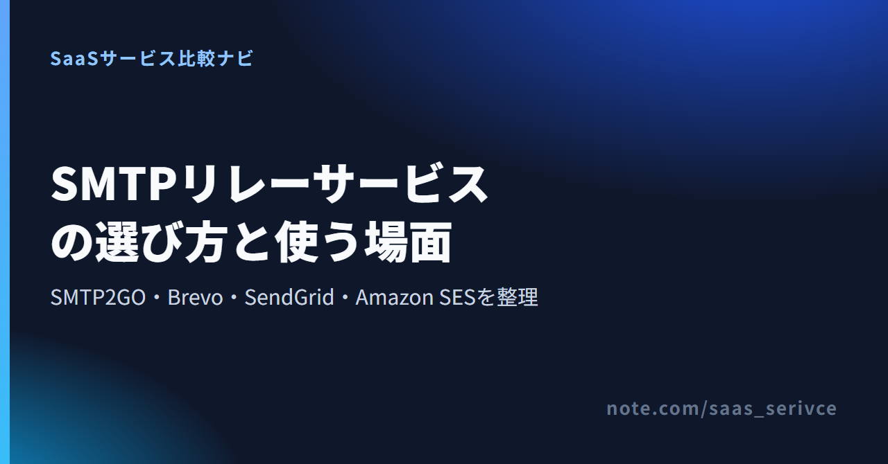
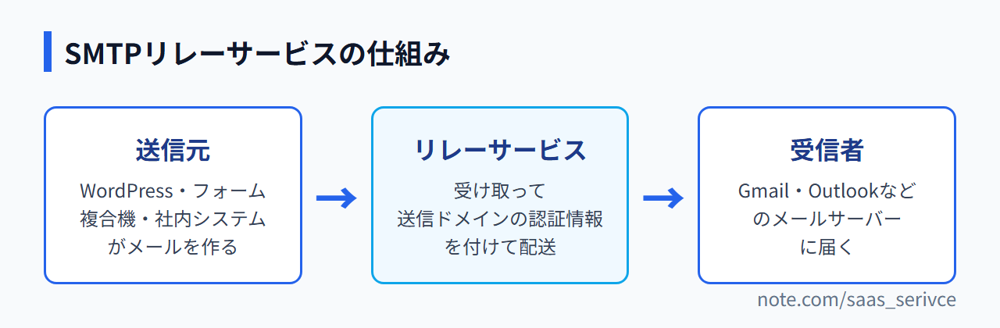
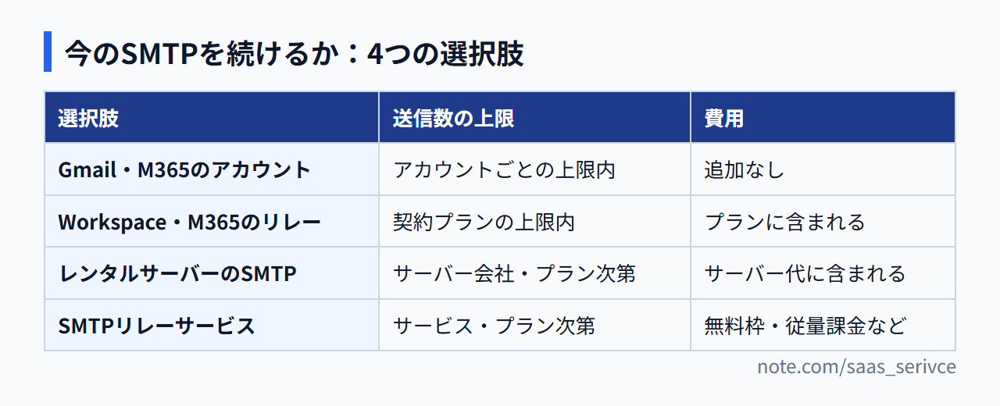
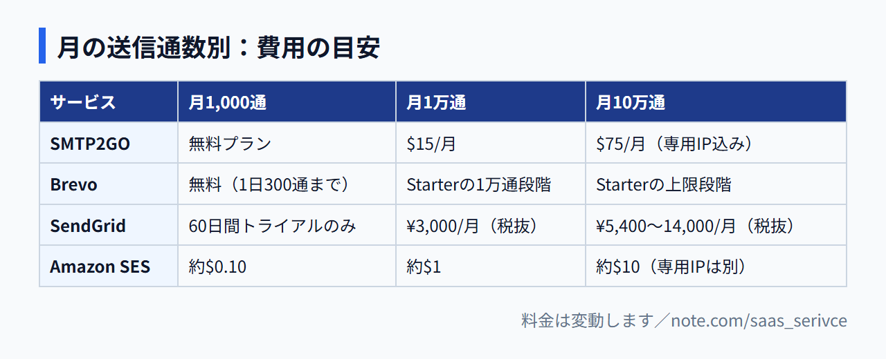

問い合わせフォームの自動返信が届かない、複合機の通知が途中で止まる、取引先からGmailの送信者ガイドラインへの対応を求められた。そんなときに迷うのが「今のSMTPのままでよいか」と「外部に任せるならどこか」の2点です。この記事では両方に答えます。紹介する4サービスはどれも編集部では契約していないため、公式情報と公開情報をもとに整理しました。
SMTP2GOの料金ページでは、無料プランの送信数と有料プランの段階を確認できます（サイトは英語です）。
今のSMTPで届いていて送信数も少ないなら、乗り換えは不要です。 届かない、上限に当たる、送信ドメイン認証を整えられない、のどれかがあればリレーサービスを試す価値があります。日本語サポートで選ぶならSendGridですが、契約できるのは法人だけです。日本円での支払いと適格請求書が目的なら、Amazon SESも候補に入ります。
今のままでよいのは、次のような場合です。
任せたほうがよいのは、次のような場合です。
アプリやWordPress、複合機が送るメールを、自社のメールサーバーの代わりに受け取って宛先へ届けるサービスです。 送信元のSMTPサーバー名・ポート・認証情報を書き換えれば使い始められます。

SMTPリレーは、自動返信や注文確認のようにシステムが自動で送るメールを届ける土台で、メール配信システムは宛先リストへ一斉配信するための道具です。後で紹介するBrevoは、この2つを1つのアカウントで扱えます。
今のアプリの送信設定を書き換える方法と、開発者がプログラムからAPIで送る方法があります。WordPressや複合機のメールを直したい段階なら、SMTP設定の書き換えで足ります。
よくあるのは「届かない」「送信数の上限に当たる」「送信者要件を満たせない」の3つです。 どれかに当てはまるなら、次の章の4つの選択肢と見比べてください。
WordPressは標準では、サーバーからそのままメールを送ります。送信元のドメインと送信サーバーが一致しない、SPFやDKIMが設定されていない、といった状態だと受信側はなりすましを疑い、迷惑メールに振り分けたり受け取りを拒否したりします。自動返信が届かないときに、まず疑うのがこの認証です。
レンタルサーバーのSMTPにも、GmailやMicrosoft 365のアカウントにも、1日に送れる通数の上限があります。自動通知や注文確認メールが重なると上限に届き、超えた分は送られません。
Gmailは送信者ガイドラインで、すべての送信者にSPFかDKIMの設定を求め、大量に送る送信者にはSPF・DKIM・DMARCをそろえるよう求めています。米YahooやMicrosoftのOutlookも、大量に送る送信者に同じ方向の要件を示しています。リレーサービスなら、送信ドメインを登録すると追加すべきSPF・DKIMのレコードが画面に表示されます。
社内の数人が普通にやりとりする程度なら、今のSMTPで足ります。 システムからの自動送信が増えた、または認証を自分で整えられないなら、リレーサービスに任せたほうが手間は少なくて済みます。

いちばん簡単な方法ですが、人がやりとりするためのアカウントなので、システムからまとめて送る使い方には向きません。
Google WorkspaceにはSMTPリレーの機能があり、Microsoft 365も複合機やアプリからメールを送る方法を公式に案内しています。契約済みなら追加費用なしで試せます。
WordPressと同じサーバーで設定が完結し、費用はサーバー代に含まれます。1日の送信上限やDKIMへの対応はサーバー会社とプランごとに決まっているので、契約中のプランの仕様書で確かめてから使い続けるかを決めます。
送信ドメインの認証と送信ログを1つの管理画面で扱えます。費用はサービスによって形が違い、SMTP2GOとBrevoは期限のない無料プラン、SendGridは60日間のトライアル、Amazon SESは送った分だけの従量課金から始まります。金額は後の章で紹介します。
小さく始めるなら、送信数と無料枠、送信ドメイン認証、支払い・請求書・サポート、上限超過と解約の4点で比べれば足ります。
まず月と1日の送信数を見積もります。無料枠の上限には月単位と1日単位があり、SMTP2GOには両方、Brevoには1日単位の上限がかかります。月初の請求書送付のように1日に集中する送り方だと、1日の上限に先に当たります。
独自ドメインのDNSを自分で編集できるかを確かめます。ドメイン会社の管理画面に入れないと、認証は完了しません。SMTP2GOは、送信ドメインを認証するまで、送信を1時間25通までに制限しています。
海外サービスはUSD建てで、サポートも英語が基本です。JCBが使えるか、請求書をPDFで受け取れるか、適格請求書（インボイス）が出るかはサービスごとに違います。海外サービスの利用料にかかる消費税の扱いは、顧問の税理士に確認してください。
上限を超えたら送信が止まるのか、追加料金で送れるのかを見ておきます。SMTP2GOの無料プランは月の上限で送信を受け付けなくなり、有料プランは月の枠の3倍まで自動で超過して送れます。解約も、SMTP2GOは管理画面から自分でできる一方、SendGridの国内代理店経由の契約はサポートへの連絡が必要です。
無料枠から始めるならSMTP2GOとBrevo、日本語サポート重視ならSendGrid、従量課金で抑えたいならAmazon SESが候補です。
SMTP2GOは、システムやアプリからの送信に機能を絞ったサービスです。有料プランは月1万通から刻まれていて、小規模の送信量に合わせて選べます。
1ドル=157円換算（執筆時点の目安。為替で変動）で、Starterは月約2,355円、Professionalは月約11,775円です。
支払いはVisa・Mastercard・American Express・DiscoverのカードとPayPalで、JCBは記載がありません。年払いなら銀行送金も選べます。サイト・管理画面・サポートは英語のみで、無料プランのチャット・電話サポートは登録から14日間だけです。
料金ページで月の送信数を選ぶと、段階ごとの月額と年払いの価格が表示されます。
Brevoはメルマガ配信が主力のサービスで、全プランでSMTPリレーとAPIによる送信が使えます。ニュースレターとフォームの自動返信を1つのアカウントで管理できます。
無料アカウントは4か月ログインがないと削除の対象ですが、自動送信などの活動があれば対象外です。公式の日本語サイトはあるものの、管理画面と公式サポートは日本語に対応していません。支払いはカード（Adyen・Stripe経由）が基本で、PayPalは新しい管理画面のアカウントでは現在使えません。有料プランはいつでも解約でき、請求期間の終わりに無料プランへ移ります。
料金ページで月の送信数を選ぶと、Starterの金額が段階ごとに切り替わります。
SendGridは、日本では構造計画研究所（KKE）が国内代理店として販売しています。ここではKKE経由の条件を紹介します。米Twilioと直接契約する場合は条件が異なります。
JCBを含むクレジットカードで払え、プロ以上は請求書払いも選べます。日本語のサポートとドキュメントは全プランで無料です。法人向けのため個人ではアカウントを作れず、解約は希望月の月末の10日以上前までにサポートへ申し込みます。
KKEの料金ページには、プランごとの月額と超過料金が円で載っています。
Amazon SESはAWSのメール送信サービスで、月額の基本料がありません。送信1,000通あたり$0.10の従量課金で、添付ファイルと専用IPは別料金です。
コンソールは日本語表示に対応し、アカウントと請求の問い合わせも日本語で受け付けています（技術的な質問には有料のサポートプランが必要）。請求はUSD建てですが、支払い通貨に日本円を選べ、利用料には適格請求書が発行されます。DNSやIAMの設定も自分で行うため、開発者がいる会社向けです。
料金ページには、送信料のほかに添付ファイルや専用IPの料金も並んでいます。
月1,000通程度なら無料枠で収まります。 月1万通を超えると月額が発生し、10万通の規模では専用IPを含めるかどうかで差が開きます。

登録、送信ドメインの認証、SMTP設定の書き換え、テスト送信の順に進めます。 ほかのサービスも大きな流れは同じですが、Amazon SESは登録の後に本番利用の申請と審査が加わります。
登録後に送信用の独自ドメインを追加し、表示されるSPF・DKIMのレコードをDNSに入れます。認証が終わるまでは1時間に25通しか送れないため、本格的に送る前に済ませておきます。DNSの設定画面の場所や項目名は、ドメインの管理会社によって違います。
WordPressはSMTP設定ができるプラグインを入れ、サービスが発行するSMTPのユーザー名とパスワードを入力します。複合機や社内システムは、管理画面の「SMTPサーバー」欄をリレーサービスのサーバー名と認証情報に書き換えます。
複数の宛先に送り、迷惑メールに入らないか、送信者名が正しいかを見ます。運用開始後は送信数を見て、上限が近づいたらプランを見直してください。無料プランのレポートは5日分しか残りません。
無料プランなら、カードを登録せずにアカウントを作れます。
少量ならSMTP2GOかBrevoの無料枠で試し、法人で日本語サポートが欲しいならSendGrid、日本円払いと適格請求書を従量でそろえたいならAmazon SESを選びます。 SendGridで請求書払いにできるのはプロ100K（¥14,000/月）からで、Amazon SESはAWSの設定を自分で進められることが前提です。
契約前に確かめたいのは次の3点です。
送信数が少なく、英語の画面でも設定を進められる人向けです。メルマガも送るならBrevo、システムからの送信だけならSMTP2GOです。
日本語の窓口に相談しながら進めたい法人はSendGridです。AWSを使っていて、送った分だけ日本円で払い、適格請求書も受け取りたいならAmazon SESが合います。
SMTP2GOの無料プランには期限がないので、今の送信数で足りるかを実際の運用で見極められます。